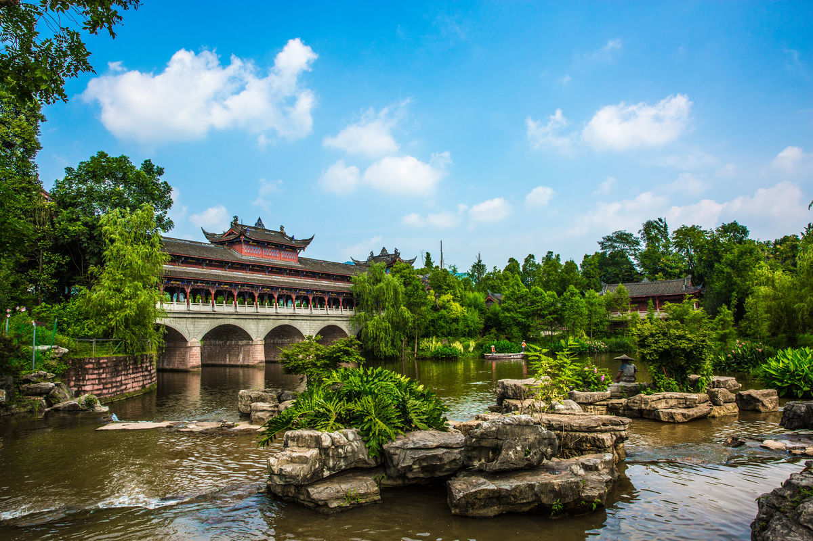

巴渝名邑
璧山县
位于重庆市以西，东经106°02至东经106°20，北纬29°17&至
29°53。东西宽5.5公里，南北长66.5公里，县域面积915平方公里
。东邻沙坪坝、九龙坡;南界江津;西连铜梁、永川;北接合川、北
碚。璧山地处重庆西大门，是川东、川北、渝西各县市到重庆的
交通要道。1995年7月成渝高速公路开通后，从县城以南15公里
的青杠街道上高速公路至重庆(陈家坪)，里程为23公里。
|  | 观音塘湿地公园位于中国重庆市璧山区，是重庆市首座国家级湿地公园，国家AAAA级景区。观音塘湿地公园内，共有仿古建筑9座，主要以川东木结构建筑为主。园内辅以特色彩绘的亭、楼、阁等，以“茅莱仙境”、“凉伞云遮”、“虎蜂马迹”等“璧山八景”命名。值得一提的是，在观音塘湿地公园内还重建了一座状元桥，桥上展出名家字画、体现璧山历史的诗词歌赋等。“走过状元桥，游客便可感知璧山1200多年的厚重历史文化底蕴 |
| 国家森林公园－青龙湖风景名胜区位于璧山县西北20公里的云雾山中，距重庆市区60公里。景区以青龙湖、云雾山、天堂湖、铁围寨、古老城、金田寺等为主，以湖水清幽、山色秀美、人文丰富为特色，享有川东小九寨的美誉。青龙湖森林公园面积5000公顷，经营面积1880公顷，森林覆盖率达75.8%，主要以马尾松、杉木等为主的针叶林，壳斗科阔叶林和针阔混交林及竹林组成。植物种类繁多，据不完全统计，森林植物有180科900余种 | |
| s露德堂位于重庆市璧山区正兴镇金堂湖边，于清光绪二十六年（公元1890年）由法国神父选址修建。清光绪五年（公元1879年）法国天主教传入璧山，先在正兴传教，后在璧山城区建堂传教。公元1898年，大足爆发了以矿工余栋臣为首的反教会武装起义，捣毁教堂，追杀传教士。事件平息后，逃往重庆的马神父和一些教友随即赶回正兴，利用清政府的赔款修建教堂。新教堂1899年破土动工，1902年建成。露德堂历经百年风雨，至今基本完好无损 |